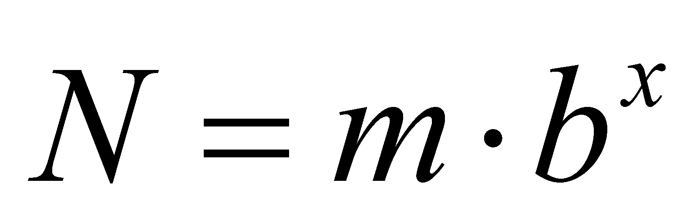

|
|
|
The scientific notation of the numerical values has the following configuration:
 (X.1.1)
where b is the basis of the
numerical system, x is the exponent of this basis (an integer)
and m mantissa, that is a numerical value ranging within the
interval
 .
Some of the most notorious bases are 2 and 10 from which the binary
respectively decimal numbers are deriving from. Mantissa is a
numerical value with a syntax known by programmers as a “fixed
point”, which means that the position of the decimal separator
is always placed after the first digit. For example, in case of basis
10, mantissa is a digital value under a fixed point, ranging within
the interval
(for
mentioning the interval limits we have used the syntax of the
relative accurate values (RAV) described in the annex X.3, the digits
placed within the round brackets being endlessly repeated).
.
Some of the most notorious bases are 2 and 10 from which the binary
respectively decimal numbers are deriving from. Mantissa is a
numerical value with a syntax known by programmers as a “fixed
point”, which means that the position of the decimal separator
is always placed after the first digit. For example, in case of basis
10, mantissa is a digital value under a fixed point, ranging within
the interval
(for
mentioning the interval limits we have used the syntax of the
relative accurate values (RAV) described in the annex X.3, the digits
placed within the round brackets being endlessly repeated).
Under these conditions, bx represents the order of magnitude of the numerical value N from the relation X.1.1. One may notice that this order of magnitude covers an interval of values (of the mantissa) and this coverage degree is as even more greater as the value of the numerical basis is also great; within a decimal numerical basis, an order of magnitude means an interval ranging from one to ten, whereas in a binary basis, an order of magnitude is only ranging from simple to double. Due to this reason, when we will need a high coverage degree, we may use the decimal order of magnitude, and when we will need a better resolution (for the order of magnitude), we may use the binary one.
Copyright © 2006-2011 Aurel Rusu. All rights reserved.